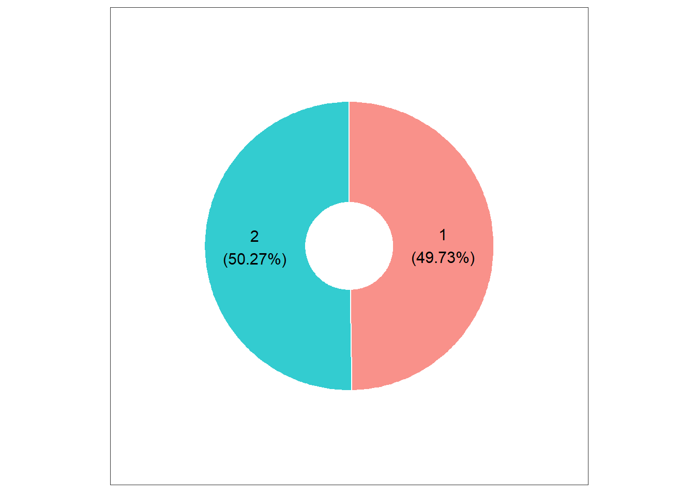
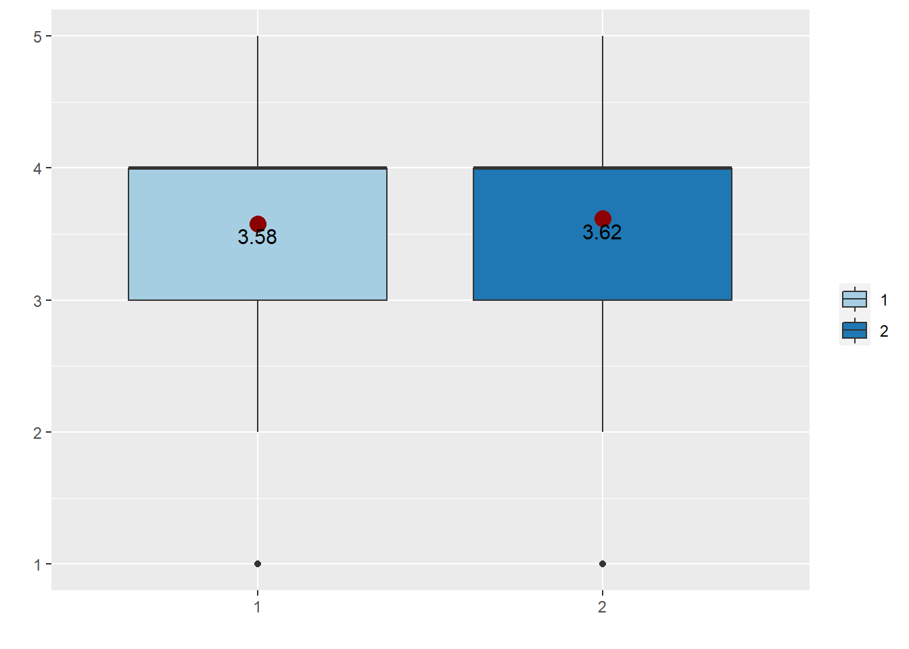
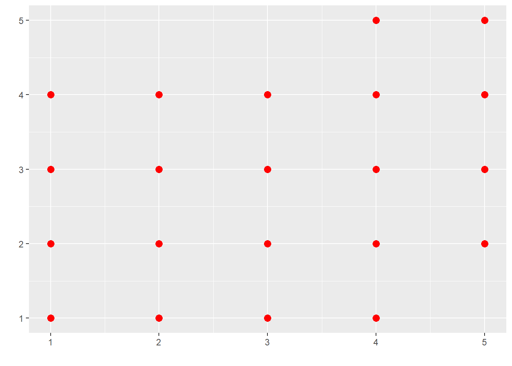

pacman패키지를 이용하여 필요한 패키지 한번에 설치
if (!require(pacman))~~부분은 pacman패키지가 이미 설치되어 있으면 로드만 설치되어 있지 않다면 인스톨(설치)와 로드를 한번에 실행
if (!require(pacman)) {install.packages("pacman")
library(pacman)}## 필요한 패키지를 로딩중입니다: pacmanpacman::p_load("readxl","summarytools","webr","ggplot2","curl","Hmisc",
"sjmisc","car","lawstat","DiagrammeR","skimr",
"tidyr","dplyr","broom","tidyverse")필요한 경우 사용자가 원하는 작업을 함수로 설정하여 프로그램(스크립트)내에서 이용할 수 있음
여기서는 meanFunction함수를 정의 하였음
meanFunction <- function(x){return(data.frame(y=round(mean(x),2),
label=round(mean(x,na.rm=T),2)))}변수(variable)
□ 구성개념을 구체적으로 정의하여 측정할 수 있도록 해주는 도구. 값이 부여되는 대상 혹은 기호(값이 꼭 숫자를 의미하는 것은 아님)
□ 주어진 현상을 설명하기 위해 구체화된 구성개념이 조작적 정의를 통해 측정이 가능한 상태로 된 것을 의미
□ 즉 구성개념은 직접적으로 측정할 수 없기 때문에 대리적인 방법(proxy)을 통해 변수를 통해 측정함
⇒ ex) 사람의 지적능력(intelligence)을 측정하기 위해 IQ 점수를 사용하였다면 지적능력이 구성개념, IQ 점수가 변수
⇒ ex) 소비자 만족도를 측정하기 위해 여러 가지 문항을 사용하였다면 소비자 만족도가 구성개념, 그 문항들이 변수
□ 구성개념은 이론적 단계를 거쳐 개념화되고, 변수는 실증적인 단계에서 조작화 과정을 거침
□ 이를 통하여 연구자는 본인의 생각을 이론적·실증적 단계를 통해 구체화를 시키는 것임
변수의 종류
□ 범주형 변수(categorical variable): 특성에 따른 구분을 위해 수치를 부여한 비계량적(nonmetric) 변수 또는 질적변수(qualitative variable)
□ 양적변수(quantitative variable): 크기나 양을 나타내는 숫자로 표현된 계량변수(metric variable)를 의미하는데 연속변수(continuous variable)와 이산변수(discrete variable)로 구분
| 변수 | 내용 | 사례 |
|---|---|---|
| 명목변수(Nominal) | 대립되는 범주를 구분한 명명변수, 숫자, 기호, 문자 등으로 표현 | |
| 농촌형과 도시형, 남과 여, 성별, 혈액형, 전화번호 등 | ||
| 서열변수(Ordinal) | 순위 서열에 따라 측정대상에 수치를 부여한 순서변수 | |
| 아주 친절, 약간 친절, 보통, 약간 불친절, 아주 불친절 | ||
| 등간변수(Interval) | 측정 대상이 갖는 속성의 양적(量的) 정도의 차이에 따라 등간격으로 수치를 부여 측정하는 간격변수 | 크기, 높이, 부피, 무게, 온도, 시간 등의 측정단위 사용 |
| 비율변수(Ratio) | 간격척도에 기준점(절대 원점)을 고정시켜 설정하여, 비율계산이 가능하여 수식화가 유리한 변수 | 연령, 연봉인상률, 물가지수, 표준화변수 |
read_excel함수를 이용하여 인터셋주소(https://github.com/HakJun-Song/class/blob/master/incheon0427.xlsx?raw=true)에서 데이터를 가져와서 incheon0427데이터셋에 저장
###
url <- "https://github.com/HakJun-Song/class/blob/master/incheon0427.xlsx?raw=true"
destfile <- "incheon0427.xlsx"
curl::curl_download(url, destfile)
incheon0427 <- read_excel(destfile)names(incheon0427)## [1] "no" "q1" "q2_1" "q3" "q4" "q4_4" "q5_1" "q6_1"
## [9] "q7" "q8" "q9_1" "q9_2" "q9_3" "q9_4" "q9_5" "q9_6"
## [17] "q9_7" "q9_8" "q9_9" "q9_9a" "q10" "q11" "q12" "q13"
## [25] "q14" "q15" "q16" "q17" "q18" "q19" "q20" "q21"
## [33] "q22" "q23" "q24" "q25" "q26" "q27" "q28" "q29"
## [41] "q30" "q31" "q32" "q33" "q34" "q35" "q36" "q37"
## [49] "q38" "q39" "q40" "q41" "q42" "q43" "q44" "q45"
## [57] "q46" "q47" "q48" "q49" "q50" "q51" "q52" "q53"
## [65] "q54" "q55" "q56" "q57" "q58" "q59" "q60" "q61"
## [73] "q62" "q63" "q64" "q65" "q66" "q67" "q68" "q69"
## [81] "q70" "q71" "q72" "q73" "q74" "q75" "q76" "q77"
## [89] "q78" "q79" "q80" "q81" "q82" "q83" "q84" "q85"
## [97] "q85_3" "q86" "q87" "q87_12" "q88" "q88_1" "q89" "q89_1"
## [105] "q90_1"dim(incheon0427)## [1] 563 105| 변수명 | 변수내용 | 변수형태 | 코딩형태 |
|---|---|---|---|
| Q1 | 성별 | 질적변수(명목변수), 카테고리 2개 | 1:남자,2:여자 |
| Q3 | 연령 | 질적변수(명목변수), 카테고리 | 5개 |
| Q7 | 복합리조트 이전에 인지여부 | 질적변수(명목변수), 카테고리 2개 | 1:예,2:아니오 |
| Q84 | 교육수준 | 질적변수(서열변수), 카테고리 4개 | 1:고졸이하,2:전문대,3:대학교,4:대학원 |
| Q85 | 결혼여부 | 질적변수(명목변수), 카테고리 3개 | 1:미혼,2:기혼,3:기타 |
| Q86 | 소득수준 | 질적변수(서열변수), 카테고리 9개 | 1:100만원미만,2:100만원대,3:200만원대, 4:300만원대,5:400만원대,6:500만원대, 7:600만원대,8:700만원대, 9:800만원이상 |
| Q88_1 | 국내카지노방문횟수 | 양적변수(비율변수) | ___ 회 |
| Q89 | 해외카지노방문경험 | 질적변수(명목변수), 카테고리 2개 | 1:있다,2:없다 |
| Q10 | 긍정적 경제인식1 | 지역주민 고용기회가 확대될 것이다 | 양적변수(등간변수) |
| Q11 | 긍정적 경제인식2 | 지역주민 소득이 증가할 것이다 | |
| 양적변수(등간변수) | 리커트 5점 척도 1(매우그렇지않다)~5(매우그렇다) | ||
| Q12 | 긍정적 경제인식3 | 지역개발 재원이 마련될 것이다 | |
| 양적변수(등간변수) | 리커트 5점 척도 1(매우그렇지않다)~5(매우그렇다) | ||
| Q23 | 긍정적 사회인식1 | 지역주민의 위락시설 이용기회가 확대될 것이다 | |
| 양적변수(등간변수) | 리커트 5점 척도 1(매우그렇지않다)~5(매우그렇다) | ||
| Q24 | 긍정적 사회인식2 | 지역주민 자부심이 높아질 것이다 | |
| 양적변수(등간변수 | 리커트 5점 척도 1(매우그렇지않다)~5(매우그렇다) | ||
| Q25 | 긍정적 사회인식3 | 지역개발수단으로서 복합리조트 위상이 증대될 것이다 | |
| 양적변수(등간변수) | 리커트 5점 척도 1(매우그렇지않다)~5(매우그렇다) | ||
| Q48 | 인지1 | 영종도 복합리조트 개발은 지역사회를 살기 좋은 곳으로 만들 것이다 | 양적변수(등간변수) |
| Q49 | 인지2 | 영종도 복합리조트의 개발은 지역사회를 위한 올바른 선택이 될 것이다 | 양적변수(등간변수) |
| Q50 | 인지3 | 영종도 복합리조트의 개발로 지역의 미래는 밝아질 것이다 | |
| 양적변수(등간변수) | 리커트 5점 척도 1(매우그렇지않다)~5(매우그렇다) | ||
| Q72 | 지지1 | 나는 영종도 복합리조트 산업발전을 지지할 것이다 | |
| 양적변수(등간변수) | 리커트 5점 척도 1(매우그렇지않다)~5(매우그렇다) | ||
| Q73 | 지지2 | 영종도가 복합리조트산업 지역으로 발전되는 것은 바람직하다 | |
| 양적변수(등간변수) | 리커트 5점 척도 1(매우그렇지않다)~5(매우그렇다) | ||
| Q74 | 지지3 | 영종도의 복합리조트산업 개발은 지역발전에 이바지 할 것이다 | |
| 양적변수(등간변수) | 리커트 5점 척도 1(매우그렇지않다)~5(매우그렇다) | ||
| Q83 | 방문의사 | 질적변수(명목변수), 카테고리 2개 | |
| 1:예,2:아니오 |
subset함수를 이용하여 incheon0427데이터에서 q10~q12까지의 변수를 가져와서 이를 target_vars라는 데이터셋에 새로 저장
###
target_vars = subset(incheon0427,select=c(q10,q11,q12))summary함수를 통해 target_vars셋에 대해 기술통계치 도출
summary(target_vars) # 주요 기술통계치## q10 q11 q12
## Min. :1.000 Min. :1.000 Min. :1.000
## 1st Qu.:3.000 1st Qu.:3.000 1st Qu.:3.000
## Median :4.000 Median :4.000 Median :4.000
## Mean :3.599 Mean :3.394 Mean :3.538
## 3rd Qu.:4.000 3rd Qu.:4.000 3rd Qu.:4.000
## Max. :5.000 Max. :5.000 Max. :5.000q10의 경우 최소값(Min.)은 1(으)로 도출되었음
q10의 경우 최소값(Max.)은 5(으)로 도출되었음
q10의 경우 평균(Median)은 3.599(으)로 도출되었음
subset함수를 이용하여 incheon0427데이터에서 q1,q3,q84 변수들을 가져와서 이를 target_vars_cate라는 데이터셋에 새로 저장
target_vars_cate <- subset(incheon0427,select=c(q1,q3,q84))
#summarytools::freq(target_vars_cate, plain.ascii = FALSE)
frq(target_vars_cate, out = "v")## Registered S3 method overwritten by 'parameters':
## method from
## format.parameters_distribution datawizard| val | label | frq | raw.prc | valid.prc | cum.prc | |
|---|---|---|---|---|---|---|
| 1 |
|
280 | 49.73 | 49.73 | 49.73 | |
| 2 |
|
283 | 50.27 | 50.27 | 100.00 | |
| NA | NA | 0 | 0.00 | NA | NA | |
| total N=563 · valid N=563 · x̄=1.50 · σ=0.50 | ||||||
| val | label | frq | raw.prc | valid.prc | cum.prc | |
|---|---|---|---|---|---|---|
| 1 |
|
135 | 23.98 | 23.98 | 23.98 | |
| 2 |
|
134 | 23.80 | 23.80 | 47.78 | |
| 3 |
|
135 | 23.98 | 23.98 | 71.76 | |
| 4 |
|
116 | 20.60 | 20.60 | 92.36 | |
| 5 |
|
43 | 7.64 | 7.64 | 100.00 | |
| NA | NA | 0 | 0.00 | NA | NA | |
| total N=563 · valid N=563 · x̄=2.64 · σ=1.26 | ||||||
| val | label | frq | raw.prc | valid.prc | cum.prc | |
|---|---|---|---|---|---|---|
| 1 |
|
112 | 19.89 | 19.89 | 19.89 | |
| 2 |
|
91 | 16.16 | 16.16 | 36.06 | |
| 3 |
|
320 | 56.84 | 56.84 | 92.90 | |
| 4 |
|
40 | 7.10 | 7.10 | 100.00 | |
| NA | NA | 0 | 0.00 | NA | NA | |
| total N=563 · valid N=563 · x̄=2.51 · σ=0.89 | ||||||
subset함수를 이용하여 target_vars_cate 데이터셋에 대해 빈도분석 실시
q1의 1에 대한 빈도는 280이고 퍼센트는 49.73%이며 누적 퍼센트는 49.73%로 나타났음 q1의 2에 대한 빈도는 283이고 퍼센트는 50.27%이며 누적 퍼센트는 100%로 나타났음
webr::PieDonut(incheon0427,aes(pies=q1),showPieName=FALSE)## Warning: `guides(<scale> = FALSE)` is deprecated. Please use `guides(<scale> =
## "none")` instead. q1변수에 대한 파이그래프 결과는 위와 같음
| 분석종류 | 내용 | 독립변수 | 종속변수 | 비고 |
|---|---|---|---|---|
| 독립표본 t-test | 독립변수의 카테고리(2개)에 따른 종속변수의 차이 분석 ex) 남, 여 | 질적변수 1개(카테고리 2개) | ||
| 양적변수 | 등분산 가정(Leven) | |||
| 대응표본 t-test | 동일변수의 전과 후의 차이분석 | |||
| 질적변수(시간전후), 1개 또는 다수 | 양적변수 | 동일변수에 대한 | ||
| 전-후 자료필요 |
q1(성별)에 따른 Q10(긍정적 경제인식1)의 차이가 존재하는지를 독립표본 t-test를 통해 확인
incheon0427$q1=as.factor(incheon0427$q1)
ggplot(incheon0427, aes(x = as.factor(q1), y = q10, group = q1)) +
geom_boxplot(aes(fill=q1), position = position_dodge(width=0.9)) +
xlab(' ') + # x축 이름설정
ylab(' ') + # y축 이름설정
scale_fill_brewer(name = ' ', palette = 'Paired') + # 색인이름 설정
stat_summary(fun.y = mean, geom="point",colour="darkred", size=4) +
stat_summary(fun.data = meanFunction, geom="text", size = 4, vjust=1.3)## Warning: `fun.y` is deprecated. Use `fun` instead.
그래프를 통해 그룹간 평균수준을 살펴본 결과 그룹1의 평균은 3.58이고 그룹2의 평균은 3.62나타났음
t_test_var_results=levene.test(incheon0427$q10, incheon0427$q1,
location = "mean", correction.method = "zero.correction")
t_test_var_results##
## Classical Levene's test based on the absolute deviations from the mean
## ( zero.correction not applied because the location is not set to
## median )
##
## data: incheon0427$q10
## Test Statistic = 5.4084, p-value = 0.0204levene의 등분산 검정결과 F-value는 5.408이고 p-value는 0.02(으)로 나타났음(p-value가 0.05보다 크다면 두 그룹간 분산이 동질하다라는 귀무가설 채택인데 0.05보다 작다면 귀무가설 기각으로 모집단에서 두 그룹간 분산이 동질하다고 할 수 없음)
t-test 분석(등분산 가정 만족)
t_test_var_equal=t.test(incheon0427$q10 ~ incheon0427$q1, var.equal=T)
t_test_var_equal##
## Two Sample t-test
##
## data: incheon0427$q10 by incheon0427$q1
## t = -0.58538, df = 561, p-value = 0.5585
## alternative hypothesis: true difference in means between group 1 and group 2 is not equal to 0
## 95 percent confidence interval:
## -0.17336001 0.09375375
## sample estimates:
## mean in group 1 mean in group 2
## 3.578571 3.618375이때 t-value는 -0.585이고 p-value는 0.559(으)로 나타났음
이때 p-value가 0.05보다 크다면 모집단에서 두그룹(그룹1, 그룹2)간 비교변수에 대한 평균차이는 0이다라는 귀무가설 채택인데 0.05보다 작다면 귀무가설 기각으로 모집단에서 두그룹(그룹1, 그룹2)간 비교변수에 대한 평균차이는 0이 아니다라고 할 수 있게 됨
t-test 분석(등분산 가정 불만족)
t_test_var_notequal=t.test(incheon0427$q10 ~ incheon0427$q1, var.equal=F)
t_test_var_notequal##
## Welch Two Sample t-test
##
## data: incheon0427$q10 by incheon0427$q1
## t = -0.58499, df = 550.96, p-value = 0.5588
## alternative hypothesis: true difference in means between group 1 and group 2 is not equal to 0
## 95 percent confidence interval:
## -0.17345399 0.09384773
## sample estimates:
## mean in group 1 mean in group 2
## 3.578571 3.618375이때 t-value는 -0.585이고 p-value는 0.559(으)로 나타났음
이때 p-value가 0.05보다 크다면 모집단에서 두그룹(그룹1, 그룹2)간 비교변수에 대한 평균차이는 0이다라는 귀무가설 채택인데 0.05보다 작다면 귀무가설 기각으로 모집단에서 두그룹(그룹1, 그룹2)간 비교변수에 대한 평균차이는 0이 아니다라고 할 수 있게 됨
# # 상관분석 x1, x2 변수할당
# Dataset$cor1=Dataset$pos_eco; Dataset$cor2=Dataset$percept
# 그래프로 이해하기
ggplot(incheon0427, aes(x=q10, y=q23)) +
geom_point(size = 3, color = "red")+ # 포인트색 설정: red(빨강)
xlab(' ') + # x축이름 설정
ylab(' ') # y축이름 설정
# 추리통계학으로 확인하기
cor.test(incheon0427$q10, incheon0427$q23)##
## Pearson's product-moment correlation
##
## data: incheon0427$q10 and incheon0427$q23
## t = 10.257, df = 561, p-value < 2.2e-16
## alternative hypothesis: true correlation is not equal to 0
## 95 percent confidence interval:
## 0.3254315 0.4647534
## sample estimates:
## cor
## 0.3973799#### 상관관계 숫자표시
if (!require(Hmisc)) {install.packages("Hmisc")
library(Hmisc)}
res2 <- rcorr(as.matrix(target_vars))
print(res2$r, digits=3)## q10 q11 q12
## q10 1.000 0.676 0.555
## q11 0.676 1.000 0.600
## q12 0.555 0.600 1.000print(res2$P, digits=3)## q10 q11 q12
## q10 NA 0 0
## q11 0 NA 0
## q12 0 0 NA#### 독립변수 kw1,kw2,kw3
if (!require(stargazer)) {install.packages("stargazer")
library(stargazer)}## 필요한 패키지를 로딩중입니다: stargazer##
## Please cite as:## Hlavac, Marek (2018). stargazer: Well-Formatted Regression and Summary Statistics Tables.## R package version 5.2.2. https://CRAN.R-project.org/package=stargazermod<-lm(q48~q10+q23, data=incheon0427)
summary(mod)##
## Call:
## lm(formula = q48 ~ q10 + q23, data = incheon0427)
##
## Residuals:
## Min 1Q Median 3Q Max
## -2.72216 -0.37909 0.04997 0.62091 1.76279
##
## Coefficients:
## Estimate Std. Error t value Pr(>|t|)
## (Intercept) 1.09534 0.14957 7.323 8.47e-13 ***
## q10 0.34307 0.03877 8.849 < 2e-16 ***
## q23 0.22787 0.03941 5.782 1.23e-08 ***
## ---
## Signif. codes: 0 '***' 0.001 '**' 0.01 '*' 0.05 '.' 0.1 ' ' 1
##
## Residual standard error: 0.6799 on 560 degrees of freedom
## Multiple R-squared: 0.2442, Adjusted R-squared: 0.2415
## F-statistic: 90.49 on 2 and 560 DF, p-value: < 2.2e-16stargazer(mod, type = "text", report = "vct*", star.cutoffs = c(0.05, 0.01, 0.001),
column.labels = c("coef"),
single.row = TRUE)##
## =================================================
## Dependent variable:
## -----------------------------
## q48
## coef
## -------------------------------------------------
## q10 0.343
## t = 8.849***
## q23 0.228
## t = 5.782***
## Constant 1.095
## t = 7.323***
## -------------------------------------------------
## Observations 563
## R2 0.244
## Adjusted R2 0.242
## Residual Std. Error 0.680 (df = 560)
## F Statistic 90.487*** (df = 2; 560)
## =================================================
## Note: *p<0.05; **p<0.01; ***p<0.001grViz("
digraph
research_model {
graph [layout = neato, overlap = true, outputorder = edgesfirst]
A [pos='-2, 0!', label='긍정적\\n경제효과', shape=square, fixedsize = true, width = 1.5, height=0.2]
C [pos='-2, 4!', label='긍정적\\n사회효과', shape=square, fixedsize = true, width = 1.5, height=0.2]
D [pos='2, 2!', label='IR개발 인식\\nR-square = 0.244', shape=square, fixedsize = true, width = 2.0, height=0.2]
A->D [headlabel = '0.343(8.849)@^{***}', labeldistance=12, labelangle=22,
headport = 'w', tailport = 'e']
C->D [headlabel = '0.228(5.782)@^{***}', labeldistance=14, labelangle=-13,
headport = 'w', tailport = 'e']
} ")